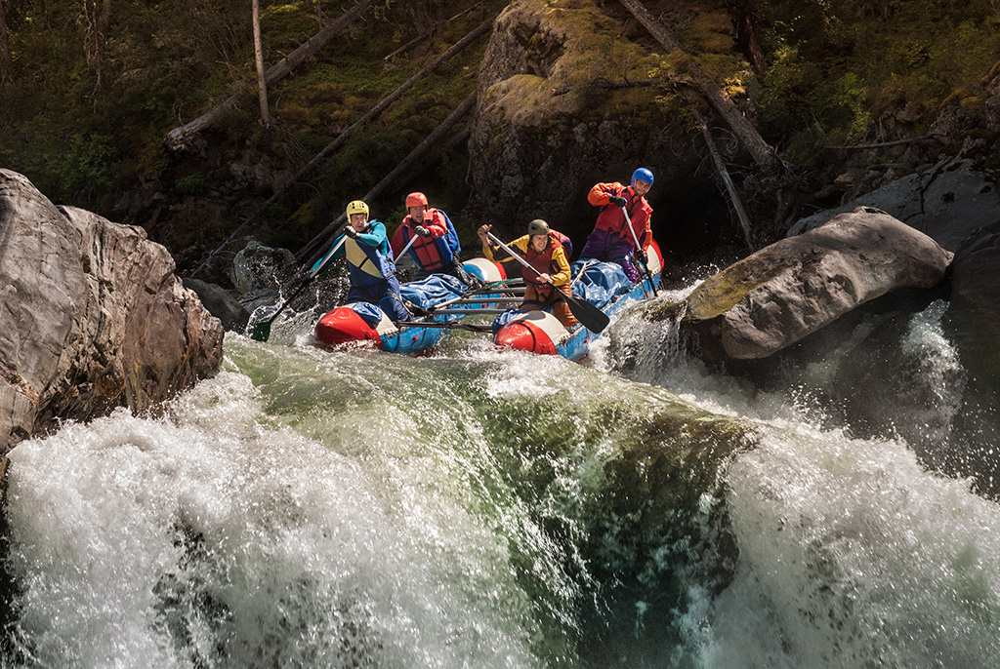

White Water Rafting



At White Water Rafting, our mission is to deliver the ultimate river adventure through expert guidance and top-tier safety. Guided by our creed of "Nature, Respect, and Adrenaline," we strive to provide every rafter with an unforgettable journey. Our motto is simple: Master the river, conquer the rapids, and live the wild.
Founded in 2005, White Water Rafting began with a simple dream: to share the raw beauty and adrenaline of the world’s most iconic rivers with everyone, from first-time paddlers to seasoned adventurers. What started as a small operation with just two rafts and a passion for the outdoors has grown into a premier adventure company. Our founders, a group of expert river guides, believed that a great rafting trip is more than just navigating rapids—it’s about teamwork, respect for the environment, and creating stories that last a lifetime. Over the last two decades, we have guided over 50,000 guests through crashing waves and breathtaking canyons. We pride ourselves on using the most modern equipment in the industry and employing expert guides who prioritize your safety without compromising on the fun. Today, our creed remains the same: "Nature First, Safety Always." Whether you are looking for a family-friendly float or a heart-pounding Class IV challenge, White Water Rafting is here to ensure your journey down the river is the ultimate adventure.